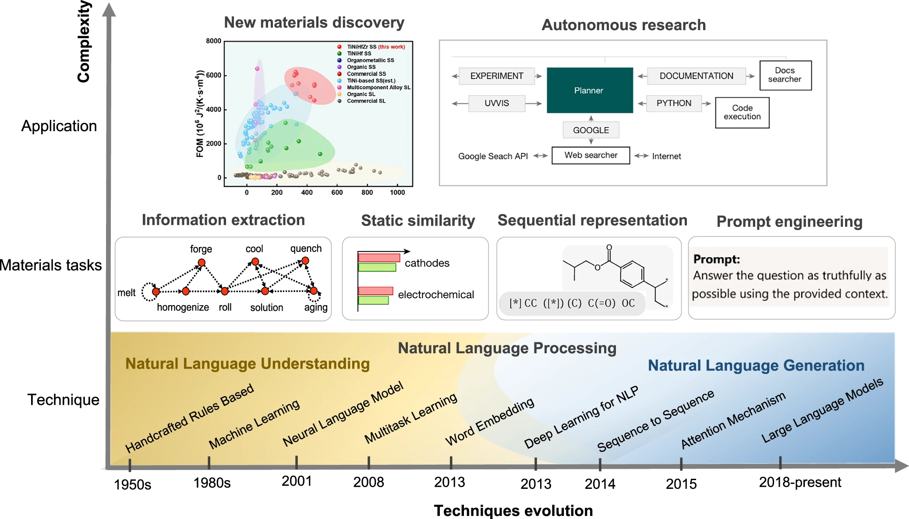
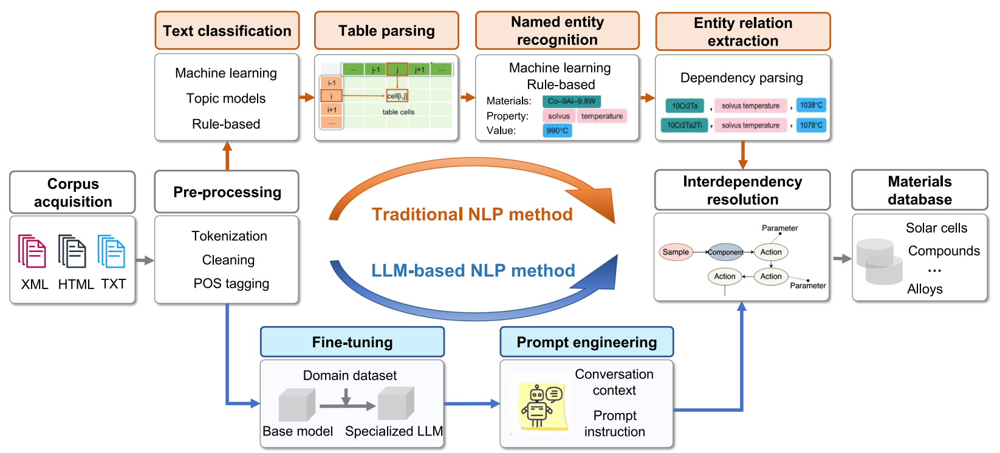
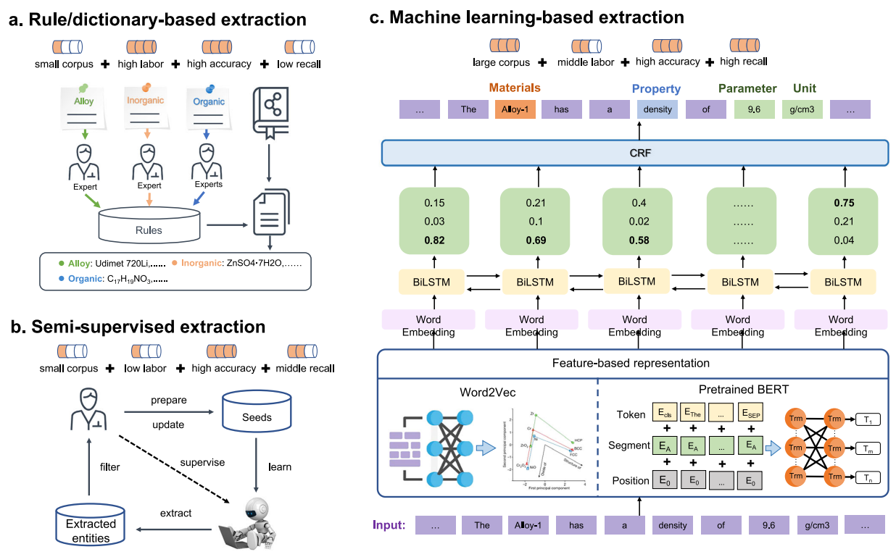
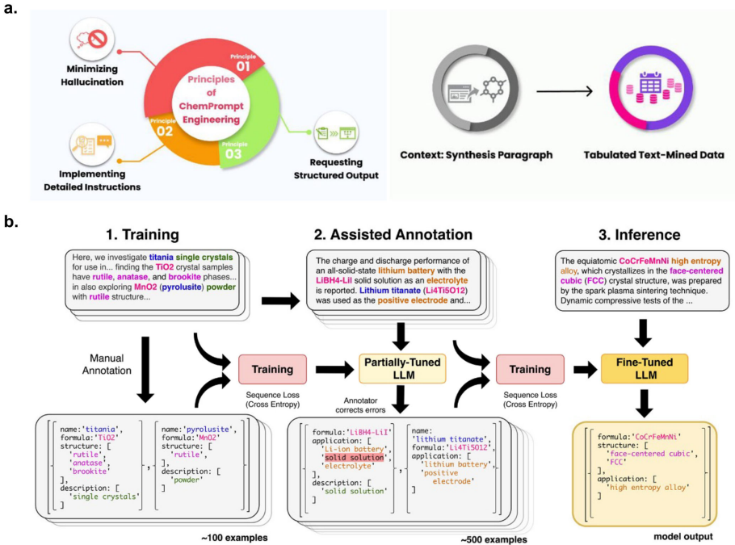
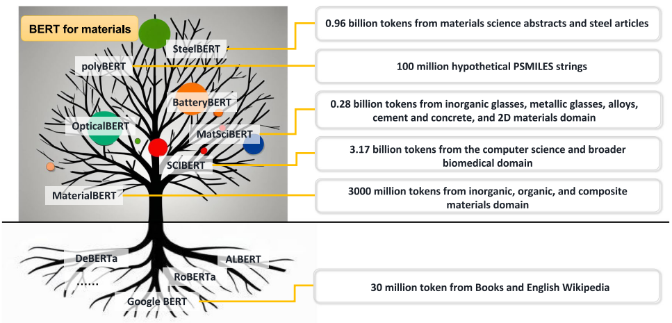

人工智能（AI）与机器学习（ML）的浪潮，正以前所未有的深度和广度渗透到科学研究的各个角落，材料科学——这个关乎物质创新与应用的古老而核心的领域，也正沐浴在这股“智慧之光”下，经历着一场深刻的范式革命。从最初的经验试错，到如今的数据驱动创新，AI的力量日益凸显。特别是自然语言处理（NLP）技术的飞速发展，以及近期大型语言模型（LLM）的惊艳表现，为我们从浩如烟海的科学文献中汲取知识、加速新材料的发现与设计，提供了前所未有的强大工具。
本期推文，我们将深度解读一篇近期发表在npj的综述性论文。这篇综述系统性地回顾了NLP和LLM在材料信息提取、材料发现以及自主研究等方面的应用进展，并对未来的挑战与机遇进行了展望。让我们一同探寻，AI的“智慧之光”是如何照亮材料科学的未来之路。
一、NLP的进化之路：从“规则解析”到“深度理解”

自然语言处理的历史可以追溯到上世纪50年代，其核心目标是让计算机能够理解和生成人类语言。在其漫长的发展历程中，NLP技术经历了从早期基于专家知识的手写规则，到利用统计学习的传统机器学习，再到如今能够自动学习特征的深度学习的深刻变革。
几个关键的技术里程碑，为LLM的诞生和NLP在材料科学中的应用奠定了基础：
- 词嵌入（Word Embeddings）
- 注意力机制（Attention Mechanism）与Transformer架构
- 预训练技术（Pretraining Techniques）
二、大型语言模型（LLM）时代：从“理解”到“生成”乃至“推理”
在上述技术的基础上，参数量巨大、在海量数据上预训练的大型语言模型横空出世，展现出令人惊叹的通用“智能”。以OpenAI的GPT系列为代表，它们经历了从GPT-1到GPT-4的快速迭代，模型规模越来越大，能力也越来越强，从简单的文本生成，到上下文学习，再到通过基于人类反馈的强化学习进行对齐，LLM在文本理解、生成、对话乃至初步的推理方面都取得了突破性进展。
三、NLP与LLM在材料数据提取中的“神兵利器”
自动化、高精度地从科学文献中提取结构化的材料数据，是实现数据驱动材料创新的前提。NLP和LLM在这一领域扮演了关键角色。

- 传统NLP流水线：奠定基础，亦有局限

传统的NLP流水线通常包括文本预处理（清洗、分词、词性标注）、文本分类（筛选相关段落）、表格解析、命名实体识别（NER，识别化合物、性质、参数等）以及关系提取（RE，识别实体间的关系）等步骤。
- 早期工具与方法：如OSCAR、ChemicalTagger以及ChemDataExtractor工具，它们结合了字典、规则和传统机器学习方法，在提取化学实体、性质和测量数据方面做出了重要贡献，为构建结构化化学数据库奠定了基础。例如，ChemDataExtractor 2.0已被用于提取大量钙钛矿、染料敏化太阳能电池、半导体带隙等数据。
- 针对特定材料体系的努力：在合金（如高温合金、铝合金）和无机材料合成程序等领域，研究者们也开发了针对性的NLP流水线，利用半监督学习、规则方法或结合BiLSTM-CRF等深度学习模型，从文献中提取成分、性质、加工路线和合成步骤等信息（参考原文Fig. 4，该图可能展示了材料合成与加工信息提取的案例）。
- 局限性：传统NLP方法往往依赖于大量的标注数据（对于监督学习模型）或精心设计的规则（对于基于规则的模型），在面对新术语、复杂句式和长距离依赖时，其灵活性和泛化能力有限。
- LLM带来的新范式：提示工程与微调
LLM的出现，为材料数据提取带来了全新的思路。

- 基于提示工程（Prompt Engineering）的“开箱即用” ：通过精心设计输入给LLM的提示（prompt），可以引导其在无需额外训练（零样本）或只需少量示例（少样本）的情况下，高效地从文本中提取所需信息。多个研究案例表明，利用GPT-3.5或GPT-4，通过提示工程，可以在金属有机框架（MOF）合成参数提取、网状材料细节提取、热电材料合成信息解析以及材料性质（如体积模量、临界冷却速率）提取等任务中取得高精度（F1分数或准确率可达90%以上）。
- 领域微调（Fine-tuning）提升专业性：为了让LLM更深入地理解材料科学的专业知识和特定任务需求，研究者们开始在材料相关的语料库上对预训练LLM进行微调。
- BERT的领域化之路：从通用的BERT到科学文献预训练的IBERT，再到针对材料科学文献进一步预训练或微调的MatSciBERT、MaterialBERT，以及更细分领域的OpticalBERT、BatteryBERT、polyBERT、SteelBERT 等。这些领域特定的BERT模型在命名实体识别、关系提取、文本分类乃至作为编码器为材料信息（如聚合物指纹、钢的加工路线和成分）生成高质量嵌入向量方面，均表现出优于通用BERT的性能。

- GPT/Llama的领域化探索：Xie等人提出的DARWIN（一系列为自然科学设计的LLaMA模型）和Mok等人提出的CatGPT（用于生成无机催化剂结构的GPT模型），都展示了通过微调使生成式LLM具备特定材料领域知识和生成能力的潜力。
四、语言模型驱动的材料发现：从“嵌入”到“智能体”
LLM不仅能提取信息，更能通过其学习到的知识表示和推理能力，直接驱动新材料的发现过程。
- 词嵌入的“导航”作用
如前所述，通过Word2vec等方法从大量材料文献中学习到的词嵌入，能够捕捉材料间的语义相似性。Tshitoyan等人利用这种相似性，从“热电”一词的嵌入向量出发，成功预测了多种潜在的新型热电材料，其中一些甚至从未在文献中与“热电”明确关联。Pei等人也利用词嵌入在高熵合金设计方面取得了类似的前瞻性成果。
- AI智能体：迈向自主研究的“未来战士”
将LLM与外部工具（如搜索引擎、数据库、代码执行器、机器人实验平台）集成，并赋予其规划、决策和调用工具的能力，便构成了AI智能体（AI Agent）。AI智能体代表了NLP和LLM在材料科学中应用的更高阶形态，它们旨在自主地解决复杂问题。
- 辅助假设生成与性能预测：SciAgents、AtomAgents、MatExpert、HoneyComb和ChatMOF等系统，通过结合LLM、知识图谱、多模态数据和物理模拟，在辅助材料科学新思想的发现、合金设计、晶体生成、以及MOF等材料的数据检索、性质预测和结构生成方面展现了强大能力。例如，ChatMOF使用GPT-4在文本搜索、性质预测和结构生成任务上分别达到了96.9%、95.7%和87.5%的准确率。
- 驱动自动化实验：Boiko等人开发的Coscientist系统是一个里程碑式的进展。它利用LLM作为核心规划器，通过与网络搜索、文档查阅、代码执行和自动化实验平台（液体处理机器人）的交互，成功实现了对真实世界化学实验（如Suzuki和Sonogashira交叉偶联反应）的自主规划、执行和优化。这标志着AI从“理论分析”走向“动手实践”的关键一步。
五、挑战与未来：通往“智能材料科学”之路
尽管NLP和LLM在材料科学领域取得了令人振奋的进展，但要实现真正意义上的“智能材料科学”，仍面临诸多挑战：
- 数值理解与定量预测：LLM在精确理解和处理数值信息方面仍有不足，难以从文本中直接建立成分、工艺与性能之间的复杂定量关系。
- 效率与资源优化：训练和部署大型LLM需要巨大的计算资源。如何在保证性能的前提下，开发更小、更高效的模型，或采用知识蒸馏等技术，是亟待解决的问题。研究表明，并非总是“越大越好”，针对特定领域，精心设计和微调的较小模型（如LLaMA 8B在钢铁数据上的表现优于70B模型）可能更具优势。
- 科学推理与“幻觉”问题：LLM的训练数据主要来源于通用文本，缺乏领域特有的精确科学知识和严谨的逻辑推理能力，容易产生不准确、误导性甚至完全错误的“幻觉”信息。通过检索增强生成（RAG）和更先进的训练技术（如DeepSeek-R1采用的强化学习）来提升其科学推理能力和减少幻觉，是未来的重要方向。
- 结构解释的深度：LLM如何真正“理解”材料的微观结构并将其与宏观性质关联起来，而不仅仅是学习表面的文本模式，是衡量其智能水平的关键。
结语：AI赋能，材料科学的无限可能
这篇综述为我们清晰地展示了自然语言处理和大型语言模型如何一步步渗透并重塑材料科学的研究范式。从最初的文本挖掘、知识提取，到如今的性质预测、结构生成，乃至驱动自主实验的AI智能体，AI正从一个辅助工具，逐渐成长为能够深度参与甚至引领科学发现的“智慧伙伴”。
尽管前路依然充满挑战，但正如历史上每一次技术革命一样，AI的融入必将为材料科学带来前所未有的机遇。对于每一位材料科研工作者而言，理解并拥抱这些新技术，思考如何将AI的强大能力与自身的专业知识和创造力相结合，将是开启未来科研大门的关键。让我们共同期待，在AI的助力下，材料科学能够迸发出更加璀璨的创新火花，为解决人类面临的重大挑战贡献更多“神奇材料”！